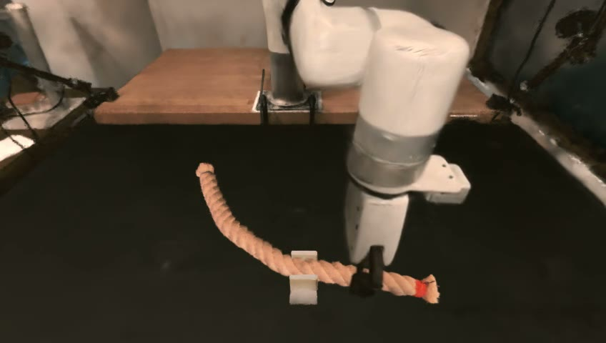
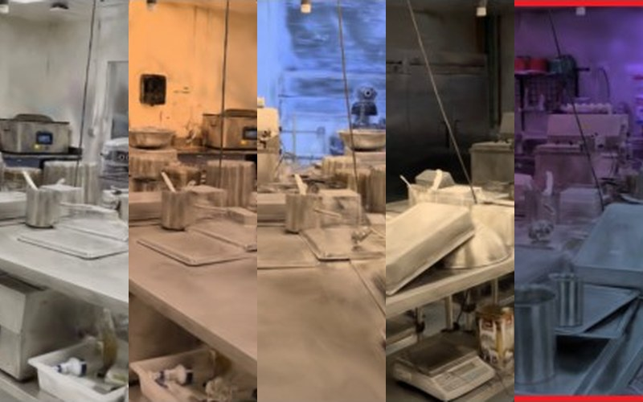
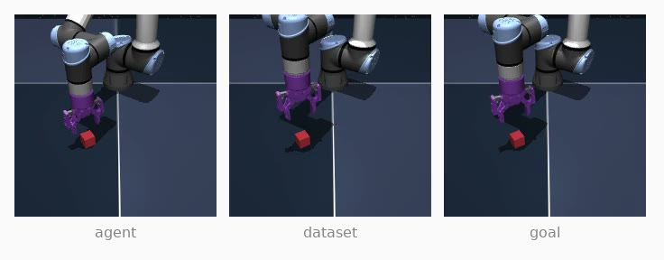
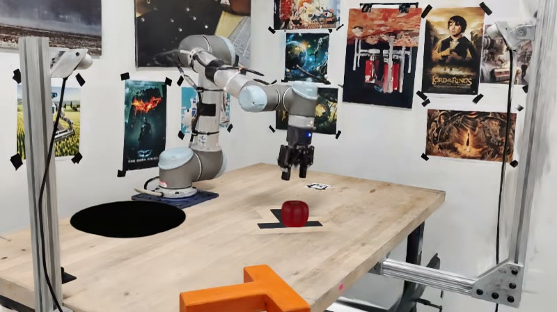
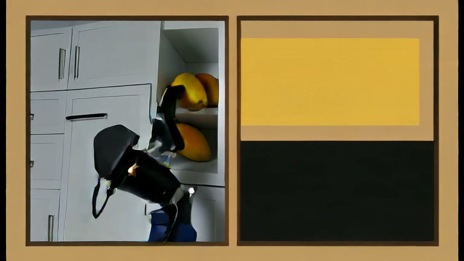
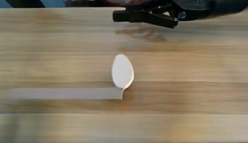

Porting and Optimizing Frontier Robotics Models on AMD ROCm
Across Radeon RDNA3, RDNA4, and Ryzen RDNA3.5 platforms.

This Time One Card Is Not Enough: HY-World 2.0 Turns a Photo into a 3D World You Can Walk Into, on W7900s
Not a movie but a house: one photo becomes a panorama, then a 3D world an engine can load. Reconstruction needs one W7900; the panorama needs 59 GiB, and this time one card is not enough.

To Grade a Robot in Simulation, the Rope Must Be Soft and the Colors Must Match That Camera: Real2Sim-Eval on a W7900
For simulation to rank policies the way the real robot does, the picture has to match that camera and the rope's springiness has to be identified from video. On one W7900 the 27-episode rope evaluation ends 18 for 27, with the failures bunched on one side of the grid.

Five Lightings, and the Robot Only Knows That One Kitchen: World Labs Atlas × DM0.5 on Radeon
Same policy, same seeds, only the background swapped for a 3D Gaussian reconstruction of a real kitchen, and half the episodes change outcome. Rendering training data in the deployment scene lifts success by 17 points, and the gain holds on a second GPU.

A Frame Squeezed into 192 Numbers, and Actions Chosen Inside Them: LeWorldModel on a W7900
One image becomes 192 numbers, and planning happens inside those 192 dimensions. A normality test keeps the JEPA from collapsing.

At small deflection, MuJoCo 4's elastic rod matches the textbook cantilever
At small deflection the tip force matches Euler-Bernoulli to about two parts in a million. At 6.8% of the length, the linear formula is what leaves.

Show It the Arm and It Plays the World; Show It the Cup and It Plays the Robot: Masked Visual Actions on a W7900
Draw the arm's path, gray out the rest, and let a video model fill in the world: show it the arm and it plays the world, show it the cup and it plays the robot. On a W7900 the SDPA fallback became the main road, and a quietly wrong attention in the VAE went back to the exact kernel.

A Real Robot Arm Shot as Two Million Gaussians, Then Moved by Joint Angle: SplatSim on a W7900
Physics stays in PyBullet; the picture becomes two million Gaussians of the real scene, moved by joint angle. Redrawn on a W7900, the authors' training views differ from their CUDA renders by at most one gray level, and all 420 trajectories are reshot.

The World Moves by Itself; the Hand Has to Learn Another Language: World2Act on a W7900
A video model that can draw the next second already carries actions in its latents. First its teacher moves onto one W7900: 35 rectified-flow steps paint the mango clip, once a 25.6 GiB convolution table is given room.

Geometry Has the Veto: How RoboRender Turns Simulated Trajectories into Videos a Policy Can Learn From
Simulation keeps the geometry and actions; a video model paints the trajectory in real-world colors.
What Is a Push-In Shot of a Café Worth?
When the camera pushes in, is the bar still where it was? WorldScore breaks that question apart and scores each piece.

A World Without a Physics Engine Still Needs a Ruler
Given one frame and a sequence of actions, play out the next second in pixels, with no physics engine as referee.

Actions Are Points Too: PointWorld Predicts the Next Second on a W7900
State and action speak the same language. From one RGB-D image, predict where every point goes in the next second.

Imagine the Next Second First, Then Let the Robot Act
Let the policy roll out the manipulation in imagination. If the imagination is obedient enough, the ranking can be settled on a GPU first.